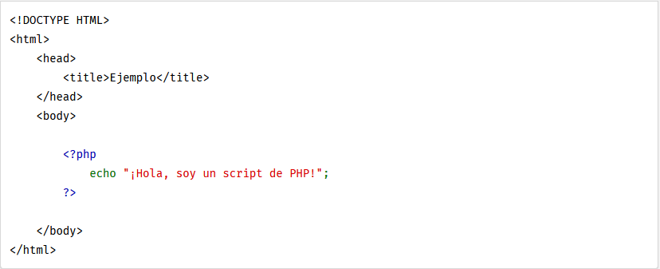

Capitulo 4 PHP básico
¿Qué es PHP?
PHP (acrónimo recursivo de PHP: Hypertext Preprocessor) es un lenguaje de código abierto muy popular especialmente adecuado para el desarrollo web y que puede ser incrustado en HTML. Bien, pero ¿qué significa realmente? Un ejemplo nos aclarará las cosas: Ejemplo #1 Un ejemplo introductorio
En lugar de usar muchos comandos para mostrar HTML (como en C o en Perl), las páginas de PHP contienen HTML con código incrustado que hace "algo" (en este caso, mostrar "¡Hola, soy un script de PHP!). El código de PHP está encerrado entre las etiquetas especiales de comienzo y final que permiten entrar y salir del "modo PHP".
Lo que distingue a PHP de algo del lado del cliente como Javascript es que el código es ejecutado en el servidor, generando HTML y enviándolo al cliente. El cliente recibirá el resultado de ejecutar el script, aunque no se sabrá el código subyacente que era. El servidor web puede ser configurado incluso para que procese todos los ficheros HTML con PHP, por lo que no hay manera de que los usuarios puedan saber qué se tiene debajo de la manga.
Lo mejor de utilizar PHP es su extrema simplicidad para el principiante, pero a su vez ofrece muchas características avanzadas para los programadores profesionales. No sienta miedo de leer la larga lista de características de PHP. En unas pocas horas podrá empezar a escribir sus primeros scripts.
Aunque el desarrollo de PHP está centrado en la programación de scripts del lado del servidor, se puede utilizar para muchas otras cosas. Siga leyendo y descubra más en la sección ¿Qué puede hacer PHP?, o vaya directo al tutorial introductorio si solamente está interesado en programación web.
¿Qué puede hacer PHP?
Cualquier cosa. PHP está enfocado principalmente a la programación de scripts del lado del servidor, por lo que se puede hacer cualquier cosa que pueda hacer otro programa CGI, como recopilar datos de formularios, generar páginas con contenidos dinámicos, o enviar y recibir cookies. Aunque PHP puede hacer mucho más.
Existen principalmente tres campos principales donde se usan scripts de PHP. - Scripts del lado del servidor. Este es el campo más tradicional y el foco principal. Son necesarias tres cosas para que esto funcione. El analizador de PHP (módulo CGI o servidor), un servidor web y un navegador web. Es necesario ejecutar el servidor con una instalación de PHP conectada. Se puede acceder al resultado del programa de PHP con un navegador, viendo la página de PHP a través del servidor. Todo esto se puede ejecutar en su máquina si está experimentado con la programación de PHP. Véase la sección sobre las instrucciones de instalación para más información. - Scripts desde la línea de comandos. Se puede crear un script de PHP y ejecutarlo sin necesidad de un servidor o navegador. Solamente es necesario el analizador de PHP para utilizarlo de esta manera. Este tipo de uso es ideal para scripts que se ejecuten con regularidad empleando cron (en *nix o Linux) o el Planificador de tareas (en Windows). Estos scripts también pueden usarse para tareas simples de procesamiento de texto. Véase la sección Uso de PHP en la línea de comandos para más información. - Escribir aplicaciones de escritorio. Probablemente PHP no sea el lenguaje más apropiado para crear aplicaciones de escritorio con una interfaz gráfica de usuario, pero si se conoce bien PHP, y se quisiera utilizar algunas características avanzadas de PHP en aplicaciones del lado del cliente, se puede utilizar PHP-GTK para escribir dichos programas. También es posible de esta manera escribir aplicaciones independientes de una plataforma. PHP-GTK es una extensión de PHP, no disponible en la distribución principal. Si está interesado en PHP-GTK, puede visitar su propio » sitio web.
PHP puede emplearse en todos los sistemas operativos principales, incluyendo Linux, muchas variantes de Unix (incluyendo HP-UX, Solaris y OpenBSD), Microsoft Windows, Mac OS X, RISC OS y probablemente otros más. PHP admite la mayoría de servidores web de hoy en día, incluyendo Apache, IIS, y muchos otros. Esto incluye cualquier servidor web que pueda utilizar el binario de PHP FastCGI, como lighttpd y nginx. PHP funciona tanto como módulo como procesador de CGI.
De modo que con PHP, se tiene la libertad de elegir el sistema operativo y el servidor web. Además, se tiene la posibilidad de utilizar programación por procedimientos o programación orientada a objetos (POO), o una mezcla de ambas.
Con PHP no se está limitado a generar HTML. Entre las capacidades de PHP se incluyen la creación de imágenes, ficheros PDF e incluso películas Flash (usando libswf y Ming) generadas sobre la marcha. También se puede generar fácilmente cualquier tipo de texto, como XHTML y cualquier otro tipo de fichero XML. PHP puede autogenerar estos ficheros y guardarlos en el sistema de ficheros en vez de imprimirlos en pantalla, creando una caché en el lado del servidor para contenido dinámico.
Una de las características más potentes y destacables de PHP es su soporte para un amplio abanico de bases de datos. Escribir una página web con acceso a una base de datos es increíblemente simple utilizando una de las extensiones específicas de bases de datos (p.ej., para mysql), o utilizar una capa de abstracción como PDO, o conectarse a cualquier base de datos que admita el estándar de Conexión Abierta a Bases de Datos por medio de la extensión ODBC. Otras bases de datos podrían utilizar cURL o sockets, como lo hace CouchDB.
PHP también cuenta con soporte para comunicarse con otros servicios usando protocolos tales como LDAP, IMAP, SNMP, NNTP, POP3, HTTP, COM (en Windows) y muchos otros. También se pueden crear sockets de red puros e interactuar usando cualquier otro protocolo. PHP tiene soporte para el intercambio de datos complejos de WDDX entre virtualmente todos los lenguajes de programación web. Y hablando de interconexión, PHP tiene soporte para la instalación de objetos de Java y emplearlos de forma transparente como objetos de PHP.
PHP tiene útiles características de procesamiento de texto, las cuales incluyen las expresiones regulares compatibles con Perl (PCRE), y muchas extensiones y herramientas para el acceso y análisis de documentos XML. PHP estandariza todas las extensiones XML sobre el fundamento sólido de libxml2, y amplía este conjunto de características añadiendo soporte para SimpleXML, XMLReader y XMLWriter.
Existen otras extensiones interesantes, las cuales están categorizadas alfabéticamente y por categoría. También hay extensiones adicionales de PECL que podrían estar documentadas o no dentro del manual de PHP, tal como » XDebug.
Referencias
Página Web Oficial de PHP. Tomado de: http://php.net/
Capitilo 5 ASP básico
Construcción sitios web en ASP.NET
ASP.NET ofrece tres marcos para la creación de aplicaciones web: páginas Web ASP.NET, Formularios Web Formsy ASP.NET MVC. Los tres marcos son estable y maduro, y puede crear aplicaciones web grandes con alguno de ellos. No importa qué marco que elija, obtendrá todos los beneficios y características de ASP.NET por todas partes.
Cada marco apunta a un estilo de desarrollo diferentes. Que usted elija depende de una combinación de sus activos de programación (conocimientos, habilidades y experiencia en el desarrollo), el tipo de aplicación que se está creando y se siente a gusto con el enfoque del desarrollo. Los tres marcos contará con el apoyo, actualizan y mejoraron en el futuro versiones de ASP.NET. A continuación es un resumen de cada uno de los marcos y algunas ideas de cómo elegir entre ellos. Si usted prefiere una introducción video, ver Hacer sitios web con ASP.NET.

Páginas Web ASP.NET
Páginas Web ASP.NET y la sintaxis de afeitar proporcionan una manera rápida, accesible y ligero para combinar código de servidor con HTML para crear contenido web dinámico. Conectar a bases de datos, agregar video, enlace a sitios de redes sociales e incluyen muchas más características que le ayudan a crean sitios de gran belleza que se ajustan a los últimos estándares web
Formularios Web Forms
Con ASP.NET Web Forms, puede crear sitios web dinámicos utilizando un modelo familiar de drag-and-drop, impulsado por el evento. Una superficie de diseño y cientos de controles y componentes le permiten crear rápidamente sitios sofisticados, de gran alcance basada en la interfaz de Usuario con acceso a datos.
MVC
ASP.NET MVC le da una manera poderosa, basada en patrones para construir sitios web dinámicos que permite una separación limpia de las preocupaciones y que le da control completo sobre el marcado para el desarrollo ágil y agradable. ASP.NET MVC incluye muchas características que permiten rápido, TDD-ambiente de desarrollo para crear aplicaciones sofisticadas que utilizan los últimos estándares web.
Referencias
Página Web Oficial de ASP. Tomado de: http://www.asp.net/
Capitulo 6 JSP básico
¿Qué es Java Server Pages?
Java Server Pages (JSP) es una tecnología para el desarrollo de páginas Web compatibles con el contenido dinámico que ayuda a los desarrolladores insertar código Java en páginas HTML, haciendo uso de etiquetas especiales JSP, la mayoría de los cuales comienzan con <% y terminan con%>.
Un componente Java Server Pages es un tipo de servlet de Java diseñada para cumplir la función de una interfaz de usuario para una aplicación web en Java. Los desarrolladores web escriban páginas JSP como archivos de texto que se combinan HTML o código XHTML, XML, los elementos y las acciones embebidas y comandos.
El uso de JSP, puede obtener información de los usuarios a través de formularios de páginas web, los registros actuales de una base de datos u otra fuente, y crear páginas web de manera dinámica.
etiquetas JSP se pueden utilizar para una variedad de propósitos, tales como la recuperación de información desde una base de datos o registro de las preferencias del usuario, el acceso a componentes JavaBeans, pasar el control entre las páginas y el intercambio de información entre las solicitudes, páginas etc.
¿Por qué utilizar JSP?
JavaServer Pages menudo sirven al mismo propósito que los programas implementados mediante el Common Gateway Interface (CGI). Pero JSP ofrecen varias ventajas en comparación con el CGI.
- El rendimiento es significativamente mejor porque JSP permite la incrustación de elementos dinámicos en sí misma páginas HTML en lugar de tener unos archivos CGI separados. - JSP siempre se compilan antes de ser procesado por el servidor a diferencia de CGI / Perl que requiere el servidor para cargar un intérprete y el guión de destino cada vez que se solicita la página. - JavaServer Pages se construyen en la parte superior de la API de servlets Java, así como servlets, JSP también tiene acceso a todas las potentes API de Java de la empresa, incluyendo JDBC, JNDI, EJB, JAXP etc. - páginas JSP se pueden utilizar en combinación con servlets que manejan la lógica de negocio, el modelo apoyado por los motores de plantilla servlet Java.
Por último, JSP es una parte integral de Java EE, una plataforma completa para aplicaciones empresariales. Esto significa que JSP puede desempeñar un papel en las aplicaciones más sencillas hasta las más complejas y exigentes.
Ventajas de JSP:
A continuación se presenta la lista de otras ventajas del uso de JSP respecto a otras tecnologías: vs. Active Server Pages (ASP): Las ventajas de JSP son de dos tipos. En primer lugar, la parte dinámica está escrito en Java, Visual lenguaje específico no básico u otro EM, por lo que es más potente y fácil de usar. Segundo, es portable a otros sistemas operativos y servidores Web que no son de Microsoft. Los servlets vs. Pure: Es más conveniente escribir (y modificar!) HTML regular que tener un montón de sentencias println que generan el código HTML. vs inclusión del servidor (SSI): SSI, realmente está diseñado para inclusiones sencillas, no para los programas "reales" que utilizan los datos del formulario, realice las conexiones de base de datos, y similares. vs. JavaScript: JavaScript puede generar HTML dinámicamente en el cliente, pero difícilmente puede interactuar con el servidor web para realizar tareas complejas, como acceso a bases de datos y procesamiento de imágenes, etc. vs HTML estático: HTML regular, por supuesto, no pueden contener información dinámica.
Referencias
Página Web Tutorialspoint de JSP. Tomado de: http://www.tutorialspoint.com/jsp/